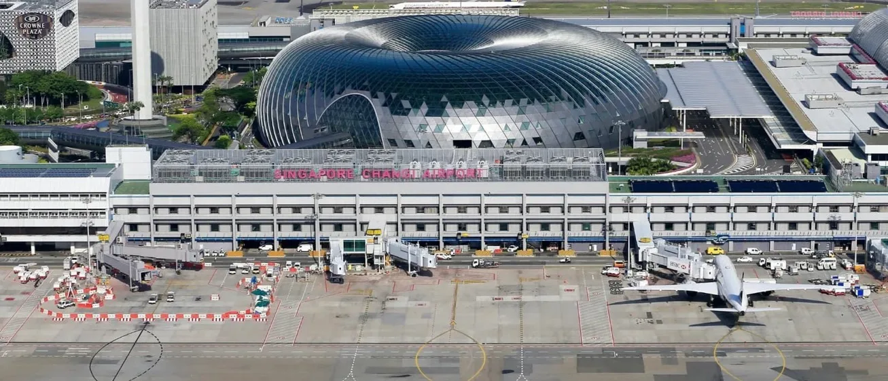
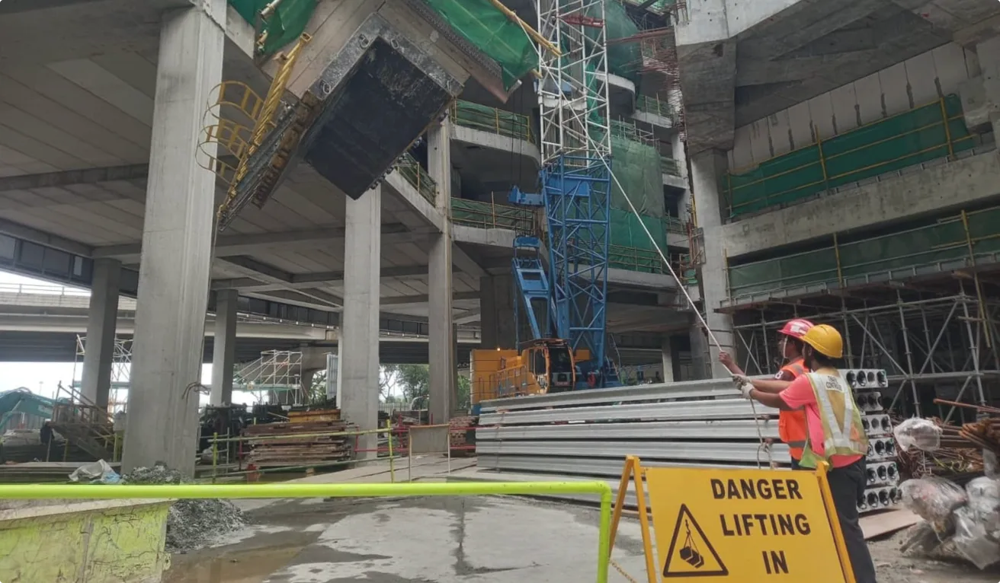
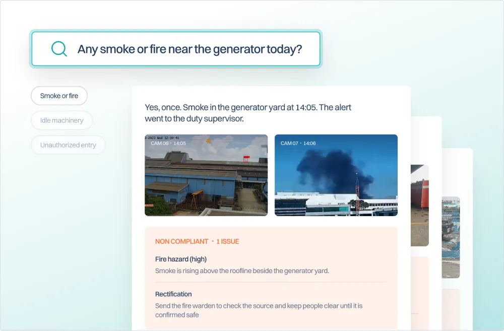
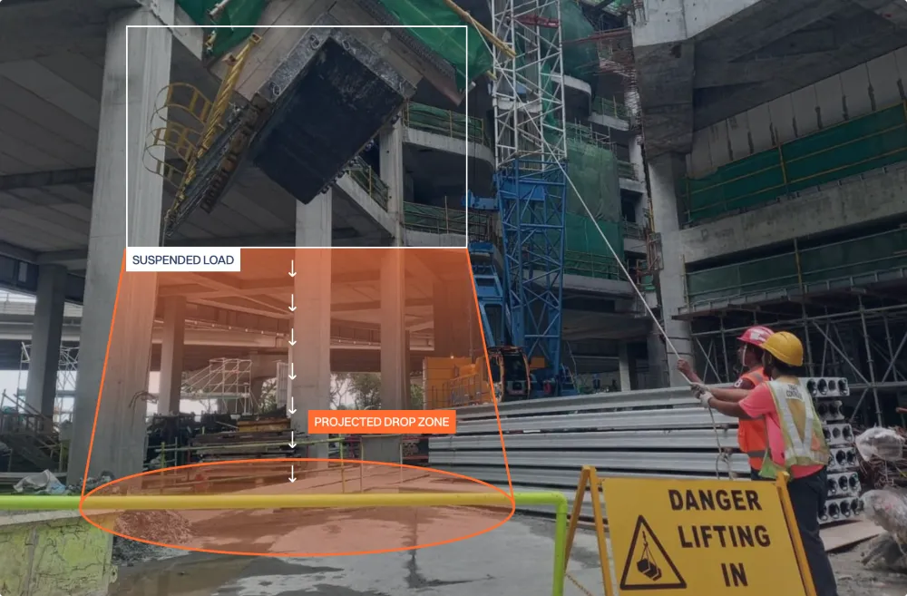
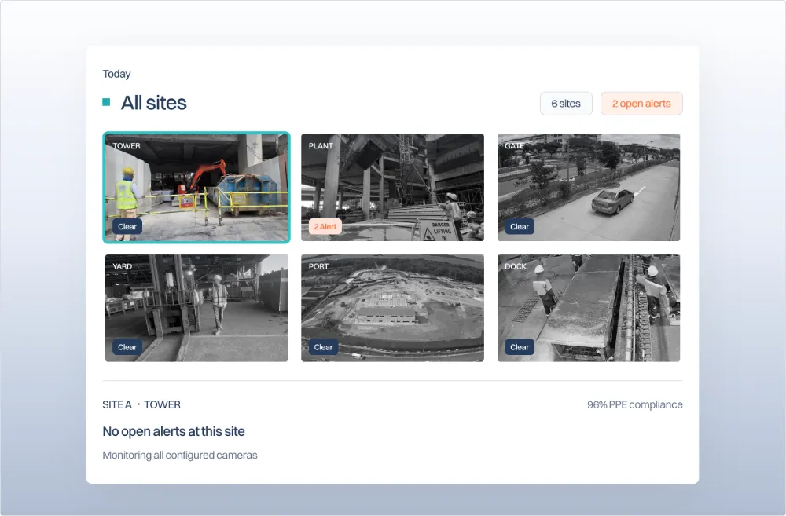
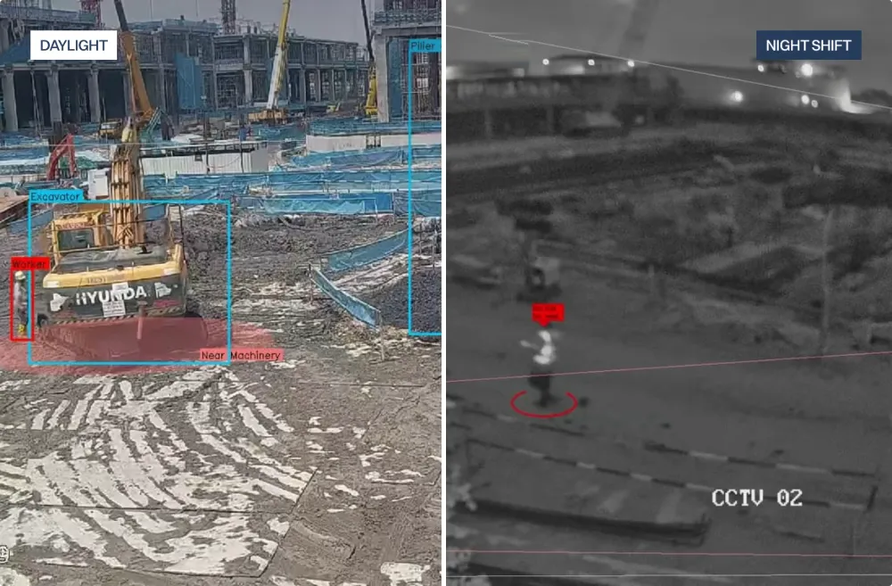
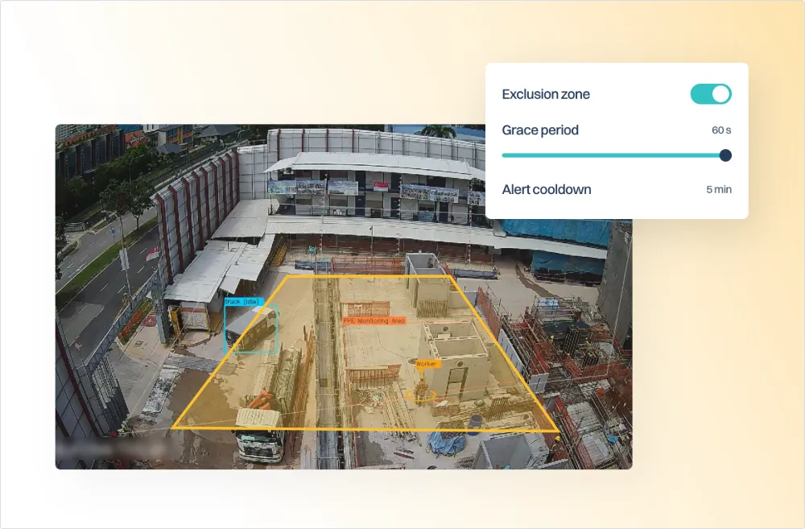

Traditional monitoring
One operator watching 2/12 cameras
- Most cameras go unwatched
- Walkarounds see one moment of one shift
- Incidents are found in the footage afterwards
AI video monitoring for construction & heavy industries
From PPE breaches to exclusion-zone entries and struck-by risk, Ailytics tells your EHS and site teams what matters while it’s still happening.
Request a demoWithout vs with Ailytics
Traditional monitoring
With Ailytics
Projects

How ailytics works

Every camera covered
60 to 80%
reduction in safety non-compliance
50+
configurable safety, security and productivity use cases
Under 2 weeks
to go live on the cameras you already own
What teams get
Accurate on live sites, and simple to run across every project you manage.
Request a demo
Ask about smoke, idle machinery or unauthorized entry and get the matching clips with camera and time. Powered by Ailytics’ vision language model.

Measures how close workers are to plant, vehicles and lifted loads in real metres, from a single CCTV camera. No LiDAR or radar.
How 3D distance works
Site supervisors get alerts on their phones. EHS managers compare PPE compliance and open alerts across every project on one screen.

Built for live outdoor sites: night shifts, rain, dust and long-range cameras, with 85–99% detection accuracy in the field.

Draw exclusion zones, set grace periods and alert cooldowns, and combine detections into your own rules to cut false alerts.
Industries we cover
Find your industry and the hazards Ailytics watches for on sites like yours.
See all industriesSecurity and privacy
Choose where video is processed and stored, and keep the people on camera private.
Independently audited information security.
Run on-premise and video stays on your network.
Blur faces or full bodies so workers stay anonymous.
Request a demo and we’ll walk you through alerts built for your site, using the cameras you already own.
Request a demo